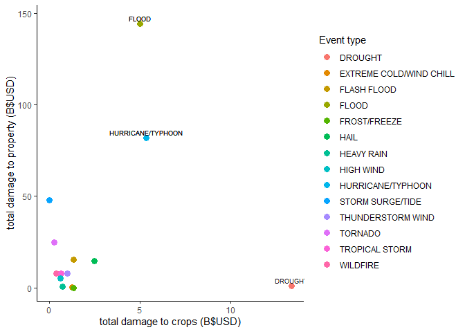

Here you'll find selected examples of my early work in learning various tools and methods in data science / data analytics.
This site was coded from the ground up using html and CSS during my time at INCO Academy Australia, a great place to network, and to learn the basics of all things hot in tech!
This project was completed for Johns Hopkins University's Coursera offering in Data Science.
It addresses the research question...
Out of the 50 severe weather events classified by the NOAA, which are the most damaging to health and wealth at the national level (USA)?
The top 3 injury and fatality causing weather event types across the USA are: Tornadoes, Heatwaves and Floods
Plot A: Showing Tornadoes, Excessive Heat and (Flash) Floods being the most (deadly) injurious
Plot B: Showing the same scatterplot, with results on the log scale
The top 3 damage causing weather events across the USA are: Floods, Hurricanes and Storm/Tide Surges
Plot A: Showing Floods, Hurricanes and Storm/Tide Surges being the most damaging to property, with Drought the most damaging to crops. In general, property damage costs far exceed crop damage costs
This analysis suggests that if wishing to allocate resources to prevent the greatest damage to population health arising from weather events, focus should be on Tornadoes, Flooding, and Excessive Heat.
If wishing to allocate resources to prevent the greatest damage to crops and property, focus should be on Drought, Floods, Hurricanes and Storm/Tide surges.
See the Reproducible Research tab for the complete analysis completed in RStudio
Inspired by the late, great Hans Rosling of Gapminder
This project was completed for Johns Hopkins University's Coursera offering in Data Science
the dataset can be found as RStudio's gapminder package (be sure to see their site for context!)
See the application pitch to learn how to explore the data below (or simply play with the slider and country options):